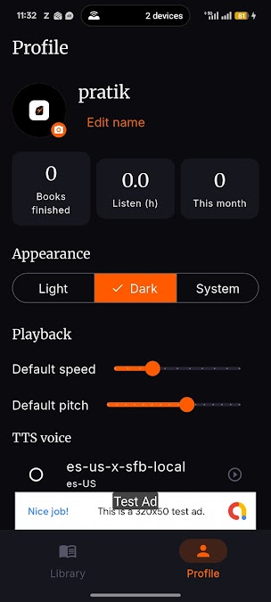
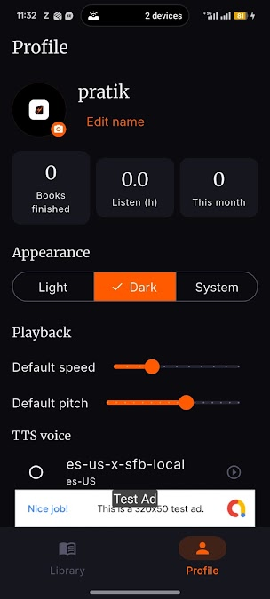
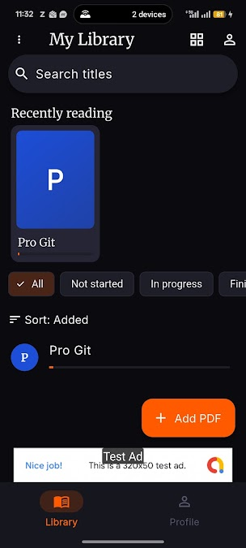
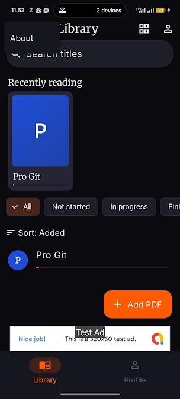
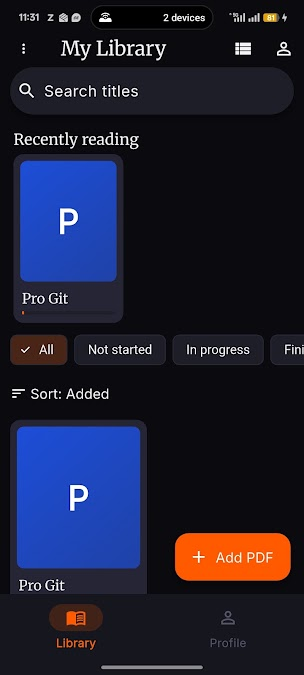

SPAR Smart PDF Audio Reader for Android
Listen to PDFs instead of staying tied to a screen. SPAR is a PDF reader and text-to-speech app for Android that turns documents into natural audio, so students, professionals and everyday readers can learn, review and multitask hands-free.

Make long documents easier to take in.
Reading a long PDF is not always practical. SPAR creates an audiobook-style experience for textbooks, research papers, reports, manuals, ebooks and other text-based PDF documents.
Open a file, start playback and keep listening while commuting, exercising, working or relaxing. The interface stays focused on the document library, playback controls and listening progress.
Built around uninterrupted PDF listening.
The core experience covers importing, organising, navigating and listening without extra complexity.
PDF to audio
Open text-based PDF files and hear books, notes, reports and manuals read aloud.
Natural text-to-speech
Use the voices available through the Android device's built-in text-to-speech engine.
Smart chapters
Move through long documents using detected chapters and organised navigation.
Background playback
Keep listening while using other apps or with the screen turned off.
Android Auto
Convenient playback controls for safer listening while driving.
Saved progress
Return to the previous listening position without searching through the document again.
Inside SPAR.
Screenshots from the current Google Play listing. Scroll sideways to see all six.




Designed, engineered and released independently.
Pratik Purohit took SPAR from product idea through implementation, testing, privacy work and Play Store publication.
Flutter, PDF processing, Android text-to-speech, background audio, Android Auto, testing and Play Store delivery
- Primary users
- Students, professionals, book lovers and multitaskers
- Core job
- Convert text-based PDFs into a continuous listening experience
- Privacy declaration
- No data collected and no data shared, according to the current Google Play listing
- Availability
- Published for Android through Google Play
SPAR at a glance.
What is SPAR?
SPAR, or Smart PDF Audio Reader, is an Android app that turns PDF documents into natural text-to-speech audio for hands-free listening.
Can SPAR continue playing in the background?
Yes. SPAR supports background playback so listening can continue while another app is open or the screen is off.
Does SPAR work with Android Auto?
Yes. SPAR includes Android Auto support and playback controls for listening while driving.
Does SPAR collect or share user data?
The current Google Play data-safety declaration states that SPAR collects no data and shares no data with third parties.
Give your eyes a break. Keep learning.
Install SPAR from Google Play and turn your next PDF into a hands-free listening experience.